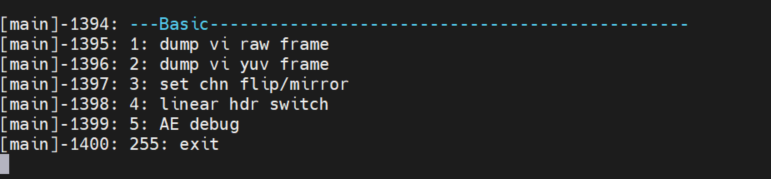
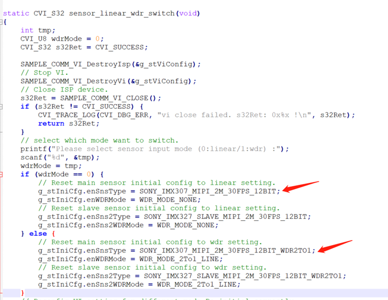

13. Debugging Tool¶
Linux：
sensorthe corresponding contentDebugging Toolusesensor_test，
sensorConfigurationFilethe corresponding content/mnt/data/sensor_cfg.ini。
the corresponding contentmiddlewareContentsthroughCommand git apply sensor_test.patchthe corresponding content，the corresponding contentgeneratesensor_test the corresponding contentuse。
Alios：
sensor_test the corresponding contentdefaultthe corresponding contentperipherals_testthe corresponding contentsolutionthe corresponding content，the corresponding contentsolutionthe corresponding content，the corresponding contentPathsolutions/peripherals_test/sensor_test/sensor_test.c
13.1. the corresponding contentFunction¶
sensor_testdefaultthe corresponding contentFigurethe corresponding content5the corresponding contentFunction：
dump sensor rawFigure
dump sensor yuvFigure
SetsensorOutputImageflip/mirror
the corresponding contentsensorDriverSupportedlinearthe corresponding contentwdrmode，canusethe corresponding contentoptionthe corresponding contentsensor modeswitch
AEtuningFunction
{kind=link}

13.2. Dump RAW¶
the corresponding content Dump RAW
13.3. Dump YUV¶
the corresponding content Dump YUV
13.4. Set flip/mirror¶
the corresponding contentsensorthe corresponding content/the corresponding contentFunction。
Runsensor_test，Input3select”set chn flip/mirror”，the corresponding contentpromptchn(0~1): Inputdev（0Tablethe corresponding contentvi pipe0，Controlthe corresponding content0the corresponding contentImage，1Tablethe corresponding contentvi pipe1）the corresponding contentControlthe corresponding contentflip/mirror。
Note：Functionthe corresponding content，needverifydump yuvFigurethe corresponding contentColorthe corresponding contentexpected。
13.5. WDRthe corresponding contentLinearswitch¶
the corresponding contentsensorthe corresponding contentwide dynamic rangemodethe corresponding contentlinearmodeswitchFunction。
Runsensor_test，Input4select” linear hdr switch”， the corresponding content” Please select sensor input mode (0:linear/1:wdr) :”Input0the corresponding contentlinear；1the corresponding contentWDR;
Note
1、the corresponding contentFunctionthe corresponding contentsensorSupportedlinearthe corresponding contentwdrthe corresponding contentmode
2、the corresponding contentsensorConfigurationthe corresponding contentsensor_test.cthe corresponding contentmodifythe corresponding contentsensorConfiguration，the corresponding contentas followsFigure
{kind=link}

13.6. AERelatedVerification¶
the corresponding content AERelatedVerification